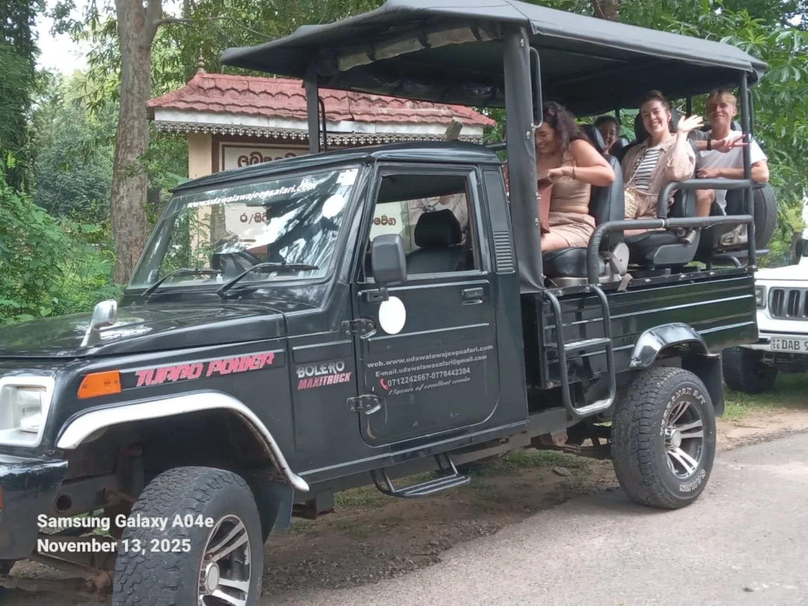
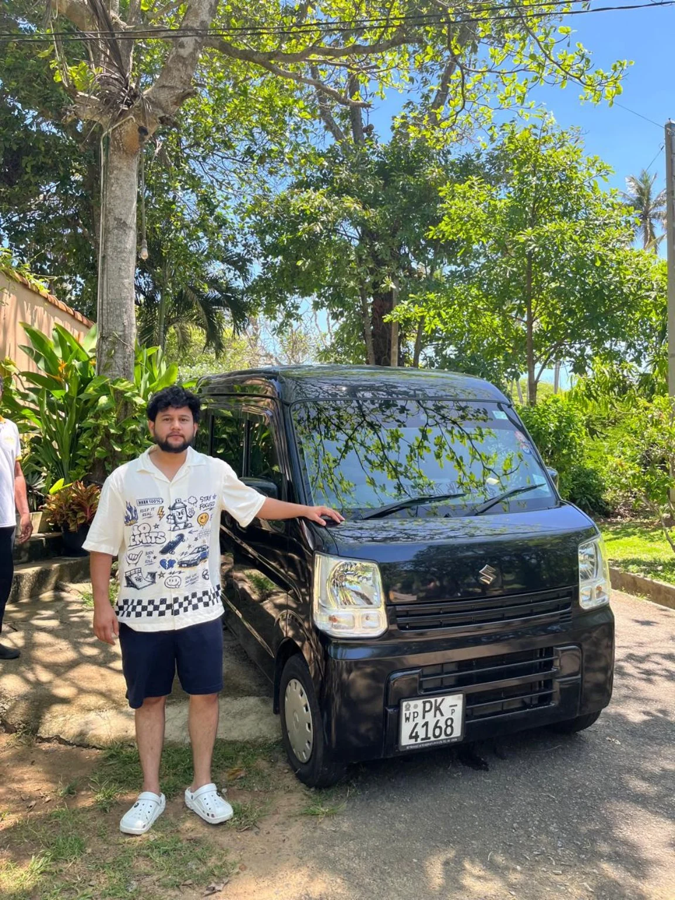

CULTURE & EXPLORING
Make a day of it.
Ask us about arranging a day trip from Tangalle. Combine the places that interest you into a journey that feels like yours.
Plan a day trip ↗ CEYLONSAFARI TOURSPlan your trip
CEYLONSAFARI TOURSPlan your trip THE JOURNEY IS PART OF THE STORY
From safari days to journeys beyond Tangalle, let’s arrange a trip around what you want to experience.

01 / THE WILD SIDE
Experience the excitement of an open-air jeep adventure. Tell us your dates, group size, and the safari you have in mind, and we’ll discuss the arrangements with you.
Routes, entry tickets, inclusions, and prices are agreed before booking. Wildlife sightings depend on nature.
02 / YOUR ISLAND ITINERARY
Share your wish list.
We’ll help you work out the journey.
Ask us about arranging a day trip from Tangalle. Combine the places that interest you into a journey that feels like yours.
Plan a day trip ↗
Have a pickup, onward journey, or a longer route in mind? Share your locations, luggage needs, and travel dates for a quote.
Discuss your route ↗LESS PLANNING. MORE LOOKING FORWARD.
Your dates, your group, and what you would love to do.
We discuss the route, availability, inclusions, and quote.
Agree the details with our team, then look forward to the journey.
A safari, an island journey, or a bike and an open road. Tell us what you have in mind.
Let’s plan it together